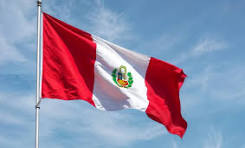
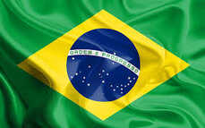
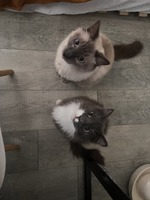

Countries' Top 3 Famous Dishes:
-
Peru:

- Ceviche: Fresh raw fish marinated in citrus, served w/ sweet potato, corn & onion.
- Lomo Saltado: Chinese-Peruvian stir-fry featuring beef, onions, tomatoes, soy sauce, served w/ both fries & rice.
- Pollo a la Brasa: Charcoal-grilled rotisserie chicken marinated in spices.
-
Japan:
- Sushi & Sashimi: Fresh raw fish (sashimi) or vinegar seasoned rice topped w/ seafood (sushi).
- Ramen: Wheat noodles in a savory broth (e.g. tonkotsu (pork bone) & miso).
- Tempura: Seafood or vegetables dipped in a light batter & deep-fried.
-
Brazil:

- Feijoada: A rich stew of black beans, sausages, & various pork cuts. Often served w/ rice, kale, orange slices, & farofa (toasted cassava flour).
- Churrasco: Brazilian-style BBQ. Features various meats, mainly picanha (top sirloin cap), served w/ coarse salt.
- Pao de Queijo: Small, baked cheese balls made from cassava flour. Crispy outside & chewy inside.
Optimizing my image:
My image started out as 2.61 MB and was reduced to 8.2 KB. I also changed the size, from 3024 x 4032 pixels to 150 x 200 pixels. Here is my photo:

For questions please contact:
Joanne Gomez

Top of the Page